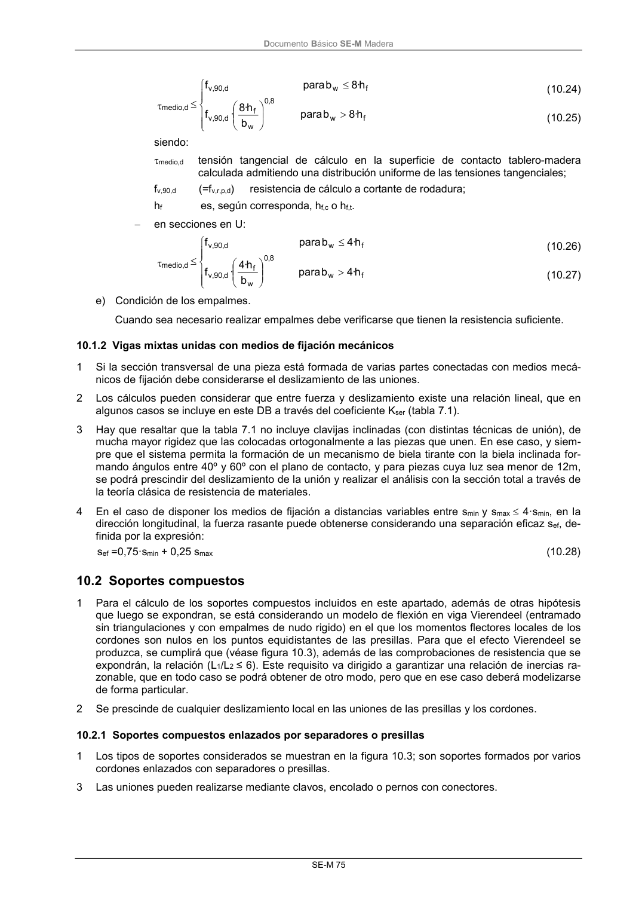

DB-SE-M · 10.2 Soportes compuestos · versión 2019-12-20 · capa oficial
Formatos: JSON compacto · Markdown · PDF fuente
Ámbito del documento · texto del ámbito · documento y tablas
ID técnico a0140 · PDF pág. 81 · jerarquía no validada por persona · contrastado con el literal de la página 81 (candidato tipográfico); no validado por persona · padre: raíz
10.2 Soportes compuestos 1 Para el cálculo de los soportes compuestos incluidos en este apartado, además de otras hipótesis que luego se expondran, se está considerando un modelo de flexión en viga Vierendeel (entramado sin triangulaciones y con empalmes de nudo rigido) en el que los momentos flectores locales de los cordones son nulos en los puntos equidistantes de las presillas. Para que el efecto Vierendeel se produzca, se cumplirá que (véase figura 10.3), además de las comprobaciones de resistencia que se expondrán, la relación (L1/L2 ≤ 6). Este requisito va dirigido a garantizar una relación de inercias ra- zonable, que en todo caso se podrá obtener de otro modo, pero que en ese caso deberá modelizarse de forma particular. 2 Se prescinde de cualquier deslizamiento local en las uniones de las presillas y los cordones.

PDF fuente redistribuible: copia fiel enlazada en esta página (SHA256 verificado).